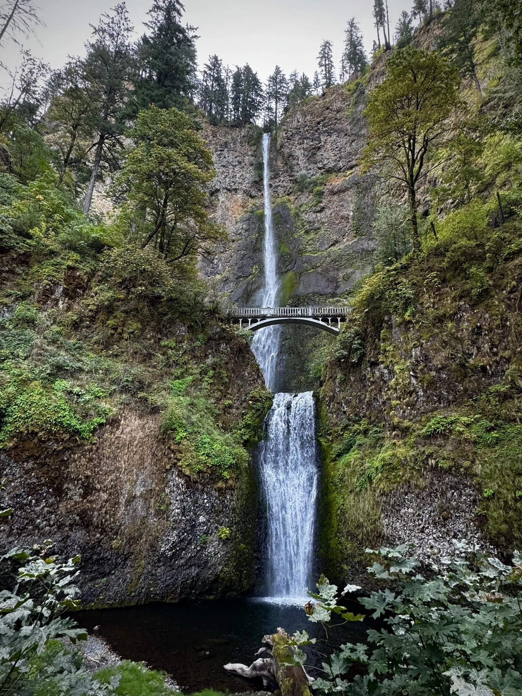
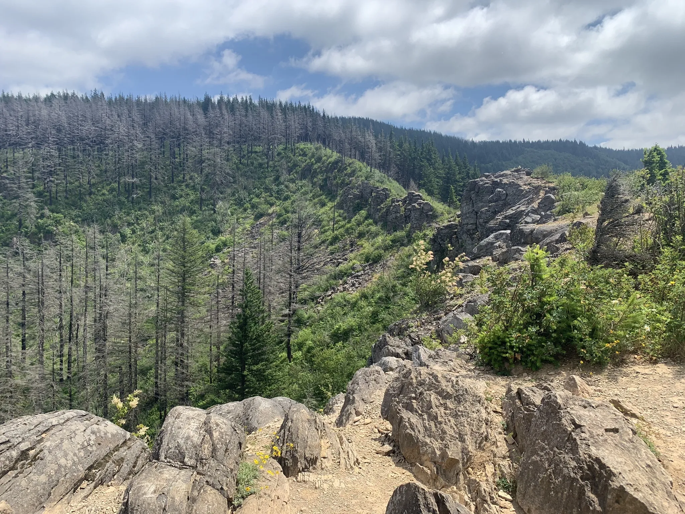
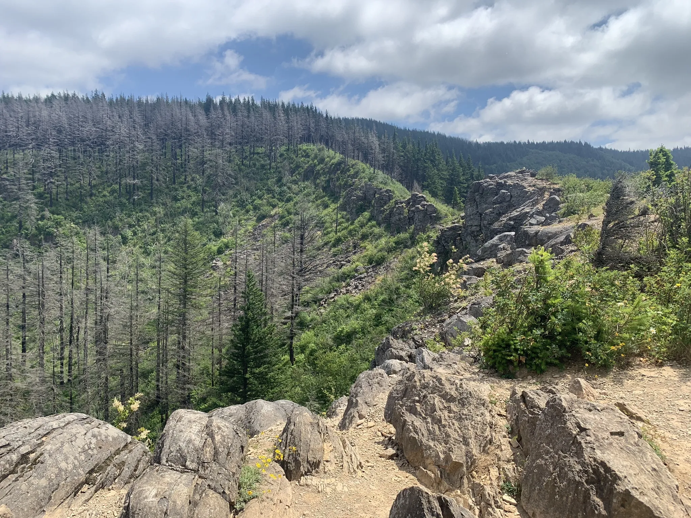
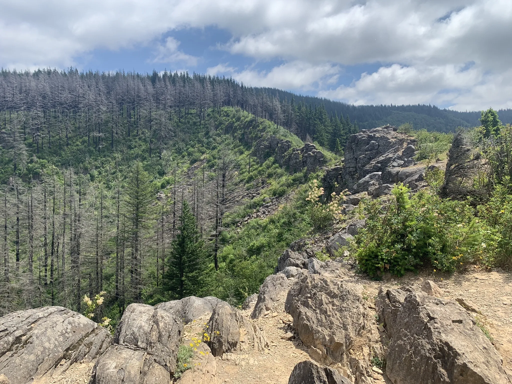

 


Hey Everyone! Looking for the perfect trail in the Columbia River Gorge National Scenic Area for your next adventure or family outing? The Gorge Trails is your go-to spot, featuring 173 top-rated routes for hiking, backpacking, walking, and more. Get insights and trail stats shared by fellow outdoor enthusiasts. Whether you're planning a relaxing nature walk or a weekend camping trip, there are plenty of beginner-friendly hikes ideal for families. Prefer something more challenging? You'll find trails ranging from short strolls to 34-mile treks. No matter what kind of day you're planning, there's a trail here waiting for you.
Designed by Elijah Sayres (2025)